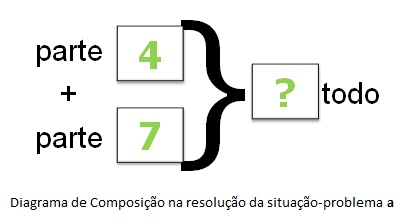
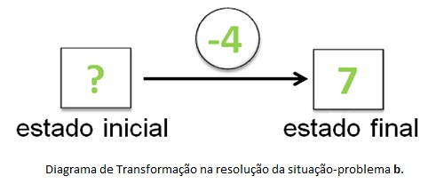
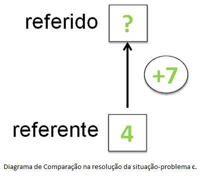

De acordo com Margina et al. (2000), para dominar as estruturas aditivas, o aluno precisa ter a capacidade de resolver diversos tipos de situações-problema correlatas, não sendo suficiente apenas resolver um cálculo numérico, pois, por exemplo, por trás de um simples 4 + 7 pode-se encontrar problemas tão sofisticados que até alunos da 4ª série (aproximadamente 10-11 anos de idade) apresentam dificuldades na hora de resolver.
A variedade de situações-problemas será aqui ilustrada através de três exemplos de problemas:
Situação-problema a: Ao redor da mesa da sala de jantar de minha casa, estão sentados apenas 4 garotos e 7 garotas. Quantas pessoas estão sentadas ao redor da mesa?
Situação-problema b: Maria comprou uma caixa de bombons por R$ 4,00 e ainda ficou com R$ 7,00. Quanto ela possuía antes de fazer a compra?
Situação-problema c: Carlos tem 4 anos. Maria é 7 anos mais velha que Carlos. Quantos anos Maria tem?
Depois de analisar os problemas a, b e c, constata-se que para resolvê-los basta apenas fazer a adição simples "4+7". No entanto, segundo Margina et. al. (2000) a capacidade de resolver estes problemas varia de acordo com a idade e a escolaridade da criança. Isto porque, embora os três problemas se refiram à utilização de uma mesma operação aritmética, eles estão associados à idéias diferentes, o que exige raciocínios diferentes do aluno para um mesmo domínio.
1. Composição de Medidas
Segundo Margina et al. (2000), a classe de problemas de Composição compreende as situações que envolvem parte e todo, isto é, juntar uma parte com outra parte para obter o todo, ou subtrair uma parte do todo para obter a outra parte. A situação-problema a é um caso de composição em que, por exemplo, a quantidade de garotos em uma mesa é uma parte, a quantidade de garotas é outra parte e a soma dessas duas partes (quantidade de garotos + quantidade de garotas) formam o todo das pessoas em volta da mesa.

2. Transformação de Medidas
Segundo Margina et al. (2000), a classe dos problemas de Transformação é aquela que trata de situações onde a idéia temporal está sempre envolvida, isto é, no estado inicial tem-se uma quantidade que se transforma (com perda/ganho; acréscimo/decréscimo; etc.) chegando ao estado final com outra quantidade. O problema b é um exemplo de uma situação aditiva envolvendo transformação, em que Maria gastou R$ 4,00 (fez uma transformação da quantia que tinha), sobrou R$ 7,00 em sua carteira (o estado final do dinheiro em sua carteira) e pergunta-se pela quantia que ela tinha inicialmente (estado inicial).

3. Comparação de Medidas
Segundo Margina et al. (2000), a classe dos problemas de comparação diz respeito aos problemas que comparam duas quantidades, sendo uma denominada referente e a outra referido. No problema c, é dada a idade de Carlos (4 anos) e a idade de Maria é apontada em relação à idade de Carlos (ela é 7 anos mais velha que ele). Portanto, a idade de Carlos é a referência (o referente) para se obter a idade de Maria que, neste caso, é o referido.

MAGINA, S., CAMPOS, T., NUNES, T. E GITIRANA, V. Repensando a Adição e a Subtração: contribuições da Teoria dos Campos Conceituais.São Paulo, 2000. PROEM-PUC/SP.